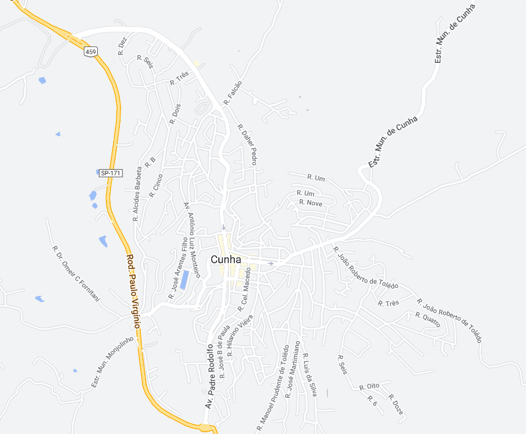

Cunha - Geodex

Município de Cunha
-
Populacão: 21.373 pessoas
-
Área: 1.407,250km²
-
Fundação: 3 de Abril de 1785
-
Distância da Capital: 222km
Cunha é uma cidade situada no estado de São Paulo, conhecida por suas belas paisagens naturais e pelo seu patrimônio histórico-cultural. Fundada em 1785, a cidade teve sua origem ligada à atividade tropeira e à exploração do ouro. Durante o auge do ciclo do café, Cunha foi importante rota de escoamento da produção cafeeira, influenciando em seu desenvolvimento econômico e urbanístico. Atualmente, a cidade atrai turistas em busca de suas belezas naturais, como cachoeiras, trilhas e montanhas, além de ser reconhecida por sua produção artesanal de cerâmica, tornando-se um importante centro de artistas e artesãos.